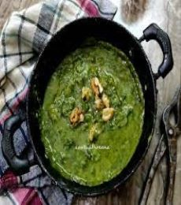
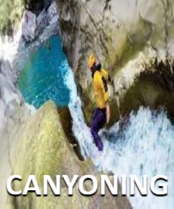
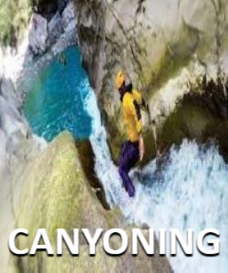

RISHIKESH
Abode of the Gods
Rishikesh, the 'place of the sages' is a celebrated spiritual town located on the banks of the Ganga. Surrounded by Shivaik range of Himalayas on three sides, it holds a deep cultural and spiritual significance for its visitors. It is believed that when Raibhya Rishi undertook rigorous penance, God appeared in the form of “Hrishikesh“ and henceforth this area came to be known as Rishikesh. It is the starting point for the Hindu Char Dham pilgrimage, including Yamunotri, Gangotri, Kedarnath and Badrinath, to seek spiritual salvation. Rishikesh is an ideal destination not only for pilgrims but also for those who want to delve deeper into spirituality, yoga and other aspects of ancient practices. Sacred rivers and mountains make a perfect stage for yoga and reflective hikes. Rishikesh is also called the 'Yoga capital of the world'. For the adventurous, Rishikesh is the place for starting their trekking expeditions and excursions towards the Himalayan peaks.
=========|| Food And Cuisines ||=========
1) Kafuli
Kafuli is the ideal dish for people who are diet conscious as it is tasty as well as nutritious at the same time. The main ingredients of the dish are fenugreek leaves and spinach. Kafuli is prepared in an iron pot and tastes the best when it is complemented by steaming rice. This dish has high nutritional value and medicinal value. Spinach is a superfood and loaded with nutrients. Dark leafy spinach are good for skin, hair and bone also it provides protein, ioron vitamins and minerals. Fenugreek leaves are good for diabetics, treats constipation and good for hair.
2) Rabri

Traditional rabdi (called Lachha rabdi in Hindi) is a luscious dessert that's often enjoyed for special occasions and holidays. Rabri features creamy layers of clotted cream (malai), crunchy nuts in a deliciously thick condensed milk. Each bite is a delightful combination of sweet flavors and textures that keeps you going in for another spoonful. To make rabri recipe, milk is cooked until it reduces to a thick pudding-like consistency, then is flavored with cardamoms, saffron, and your favorite nuts and dried fruits.
3) Garhwal ka Fannah

Garhwal ka Fannah is a heavenly staple dish which is renowned in Mussoorie. This dish as pleasing to your eyes as it is to your stomach. Garhwal ka Fannah is so delicious that it is a must for every restaurant in Mussoorie to have it on their menu. There are few dishes by which you are never satisfied, they leave you wanting for more. Garhwal ka Fannah is one such dish that on tasting it you'll surely ask for more. This sumptuous dish has become so popular over the years that it is on the menu card of every Pahadi wedding.
=========|| Famous Places ||=========
1) Beatles Ashram

Formerly known as Chaurasi Kutia, Beatles Ashram happens to be a popular ashram located at Rishikesh in Uttarakhand. The place received a lot of hype and achieved wide recognition after the Beatles band of Liverpool came to stay there in the year 1986. The place usually attracts history buffs, experience seekers, serenity and peace seekers, nature lovers, photo fanatics, and meditation enthusiasts. The major attractions of the ashram include its stunning dome-shaped construction, amazing graffiti works, and the beautiful picture of the members of the Beatles band painted in one of the interior walls of Ved Bhavan. Other interesting things that can be seen here are the mysterious writings done on the walls of Siddhi Bhavan and Anand Bhavan and the beautifully designed meditation chambers of Chaurasi Kutia. Surrounded by other serene attractions of the city, this place is totally worth visiting.
2) Shivpuri

This “Abode of Lord Shiva”, so pristine, serene and filled with adventure, is a mecca for river rafting in India. Located 20kms from Rishikesh on the banks of River Ganga, the tranquil town of Shivpuri beams with life, laughter, adventure and nature's bountiful thrills.River rafting is not only thrilling but also extremely picturesque with the white rapids below, lush dense forest on either side and a view of the spectacular mountains in the distance making Shivpuri one of the favourite tourist places to visit in Rishikesh. You can indulge yourself in other activities like Jungle Walks, Beach Camping, Mountaineering and Jungle Trekking. A day trek to the beautiful Neer Waterfall followed by campfire and roast veggies by the beach is the perfect end to a day. Among other experiences, Shivpuri is the place for all those on the lookout for peace and rejuvenation. During your stay in Shivpuri, you will have the opportunity of learning the techniques of yoga and meditation. You can enjoy early morning yoga and relaxation sessions at Yoga Camps or even at the sacred Shiva Temples.
3) Neelkanth Mahadev Temple

Rishikesh is known for many things amongst which stands tall is the famous Shiva Temple called the Neelkanth Mahadev temple. The stupor and enchantment of the delightful city tells the most ancient of all tales and significant happenings in Hindu Mythology. During the months of Shrawan and Shivratri, huge numbers of followers turn out and grace this place and express their devotion to the mighty Shiva. The way to the temple also is thrilling which is why several visitors prefer trekking their way up the temple. Within the temple is a natural spring of water where devotees usually take bath. People can make offerings of coconut, milk, honey, flowers, and fruits to the Lord. This ancient temple of Lord Shiva is unmissable not just for the mystical tale that encapsulates it, but also for the lovely sights of the mountains and valleys it showcases while you are here.
=========|| Things To Do ||=========
 
